Vol. 01AI productLive beta
TermBloom
Drop in a syllabus, watch the term grow.
15days, idea to beta
200commits
30design previews
Product manager · Builder · New York
I find real user needs,and solve them by building products.
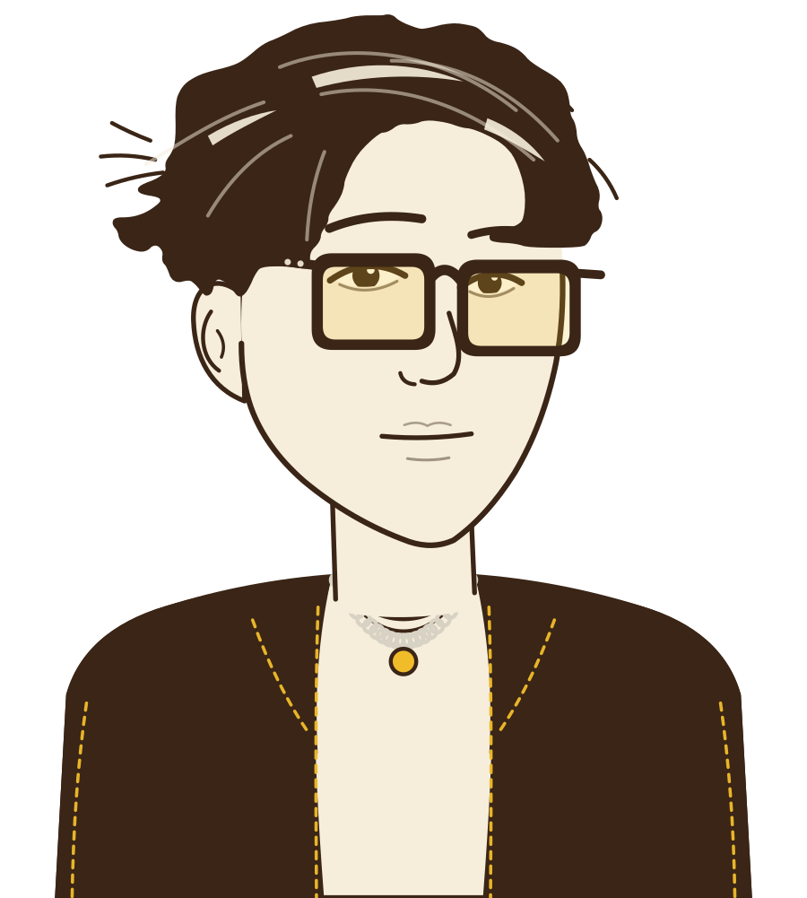
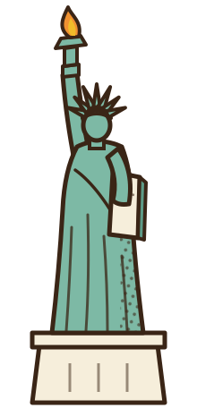
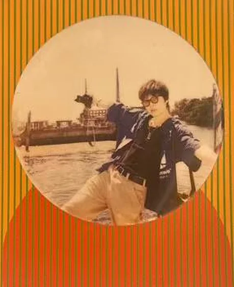
01A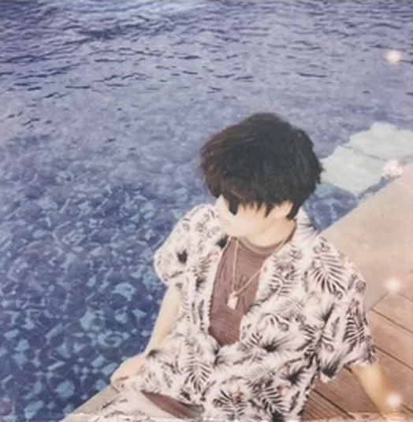
02A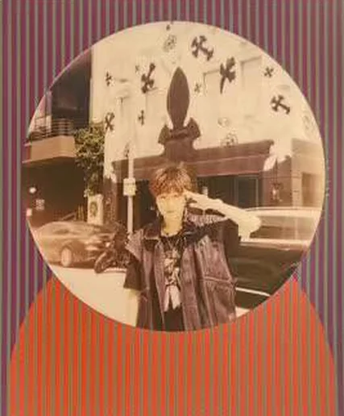
03A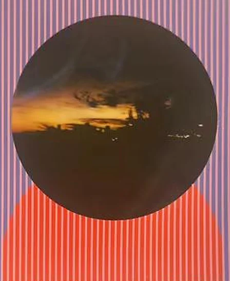
05A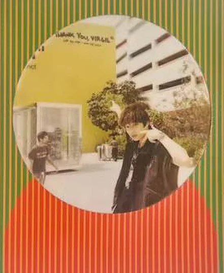
07A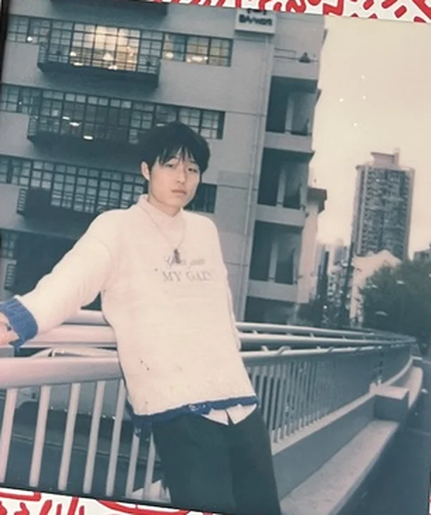
08A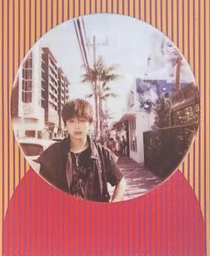
09A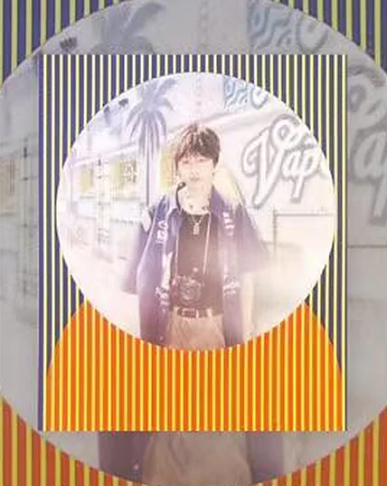
11A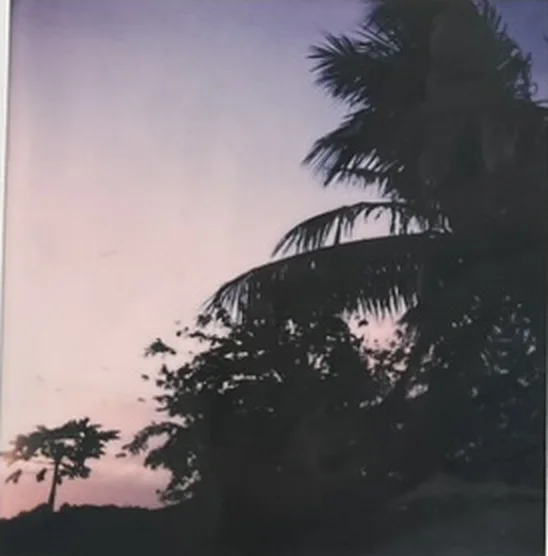
12A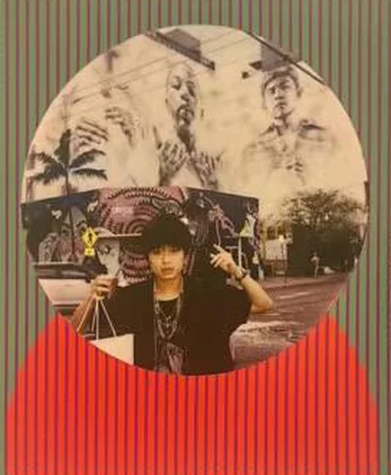
13AZero to one, designed and shipped.
Drop in a syllabus, watch the term grow.
What each role added, in order. Pick one to read it.
Small things I build to try an idea.
Pick your walker, then stroll six NYC stops as a pixel me. Sunset, rain or snow.
A fan-made 3D teardown of a flying-car concept. Launch it up a loop ramp, then X-ray the parts.
Rules I keep coming back to.
Leading teams and getting on stage.
High school commencement
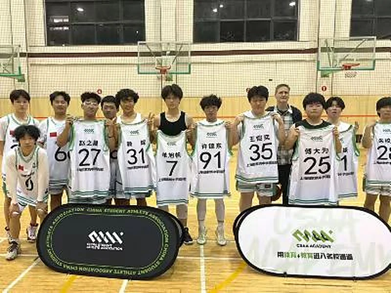
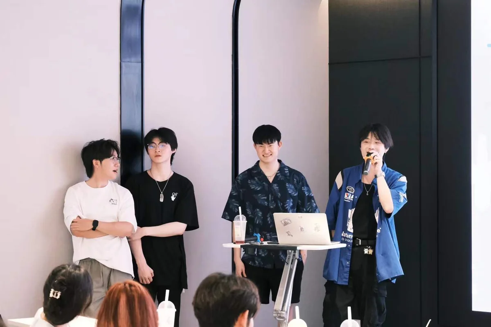
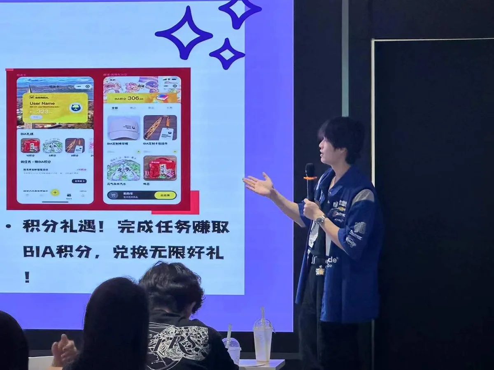
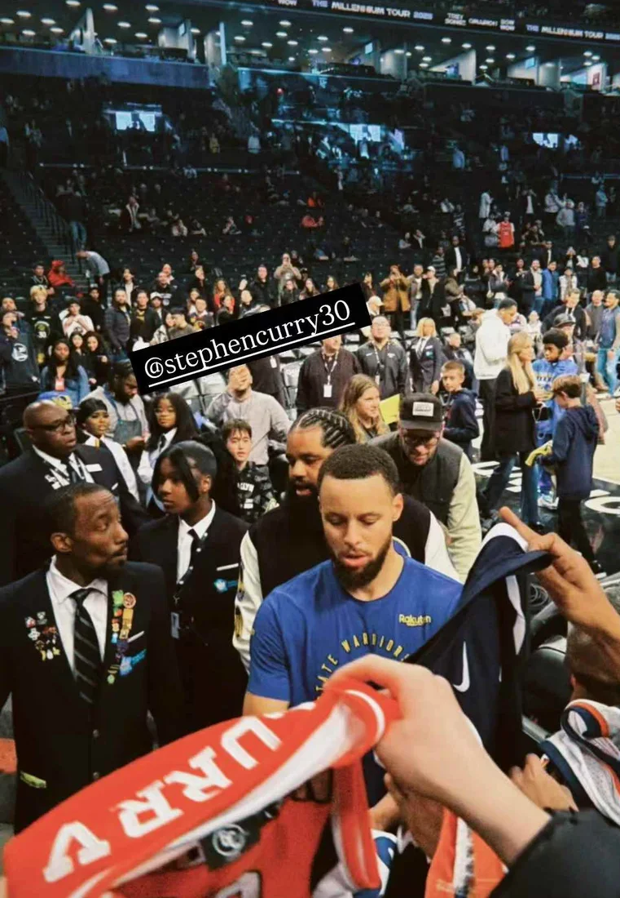
Contact
Open to product management and product operations roles. Based in New York, open to relocate.
xs2456@nyu.eduDrop in a syllabus, watch the term grow.
It started with Apple Stickies.
I tried Obsidian, Notes and Notion. What I actually used every day was Apple Stickies, because it's always there.
My deadlines lived in syllabus PDFs, course sites, the school calendar and professors' emails. NYU doesn't use Canvas, so there's no single feed to subscribe to.
The real painNot missing a deadline. My list was too messy to keep updated.
Where Stickies falls short, and what TermBloom does instead
A calendar that rolls forward, so you see what got done and what's coming next.
No tidying by hand. Each item moves on its own: upcoming, today, done or overdue.
Overdue items surface on their own, and workload bars flag crunch weeks ahead.
AI turns every way of writing a date into a real one it can sort and remind on.
The obvious move, what I chose, and why.
over an AI agent you chat with
A schedule has to be trustworthy. Every task runs the same way: AI returns structured data, you confirm each item, then it lands on the board.
over a new AI-written page per exam
Review plans are one fixed template filled with AI data, so they're editable, consistent, and their daily tasks flow into the calendar.
over a marketing website
"Nobody reads a product website." You write your name and drop in files first. Sign-up appears right before AI starts reading.
over trusting what AI reads
AI rarely gets a date wrong, but one wrong exam date can make someone miss the exam. So the syllabus text sits beside each date, and nothing counts until you confirm.
over a web page you have to open
What Stickies got right: a to-do list works when you see it without opening anything. It lives on the desktop, one ⌘⇧K away.
over a wall of red on day one
Someone who starts in October shouldn't open the board to everything they've already missed.
over asking people to share their schedule
Inspired by Beli and Spotify Wrapped: nobody shares a plan, but people share what they got done. Every Sunday TermBloom fills in one journal page (things done, the hardest day, habit dots) and leaves room for one line of your own. AI does the chores; the sense of achievement is yours.
It sounds cool, but it's useless. On the score predictor
The questions I asked before building more.
Ranked, most fatal first. Highlighted: what I'm working on now.
Hardcore planners already spent hours on their Notion setup, so switching costs them the most. Planners like the order and the looks; everyone else likes never having to organize.
Claude writes the code. I make the calls.
The problem, not a solution.
Me2–3 clickable previews.
ClaudeOne, a mix, or try again.
MeNothing goes live without my call.
ClaudeI wouldn't take a roadmap written in one shot. We planned it question by question, so the timeline stayed mine.
A handbook with a daily changelog, and one backlog ranked P0 to P2 that every idea and loose end goes into.
Four real syllabi (ODE, Analysis, Math Modeling, Macro) were the test data. My own pain points became the bug list.
Planning a term happens once. Checking what's due happens every day.
The daily question is "what should I do now, and what's due next?" Like Typeless for typing: do one daily job so well you can't go back.
The phone is where "what's due?" gets asked, so that's the next big piece of work.
Tested with5–10 invited students
Pass if85% of syllabus imports work
Pass if1,000 active users